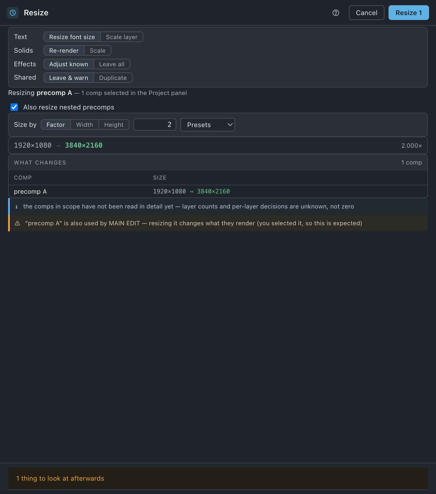

Resize
Changes a comp's resolution — with its precomps, text, masks, lights, cameras and effects — so the render is the same picture at the new size.
Use it when
- A 4K deliverable is wanted from a build you made at 1080.
- You want a half-size copy of a heavy build for a fast preview render.
- A finished spot has to go out at a second size for a different placement.
- A precomp was built at the wrong resolution and everything under it has to follow.
What it does
Scales a comp and everything inside it by one factor: nested precomps, layer positions and scales, masks, text, solids, lights, cameras and the effect parameters it knows how to adjust. Text can have its font size changed rather than the layer scaled, and solids can be re-rendered at the new size rather than stretched. The resolved size is on screen the whole time — 1920×1080 → 3840×2160 2.000× — so you never press a button to find out what it will do.
What it does not do: it is a uniform scale only and the aspect ratio is locked. There is no vertical cut of a horizontal spot here — a reframe means changing Width and Height in Comp settings and re-laying the contents by hand. It also does not touch anything on disk.
Do it
- Select comps in the Project panel, or open the one you want in the timeline.
- Press Resize, and check the line at the top of the sheet. It states what it resolved — Resizing MAIN — the active comp, MAIN, or the number of comps selected.
- Decide Also resize nested precomps. It wears the number of nested comps it adds.
- Set Size by — Factor, Width or Height — and type a value, or pick from Presets.
- Read What changes, and the flags under it.
- Press Resize n.
Scope. There is no scope switch, because a whole-project resize is not a thing this tool means. Instead it states what it resolved: your Project panel selection if it holds comps, otherwise the active comp, and it says which. A selection holding only footage and folders is not a selection for this purpose — it falls through to the active comp and tells you so.

What you'll see
The four standing choices sit at the top of the sheet and are remembered on this machine, not per project.
| Option | What it means |
|---|---|
| Text | Resize font size (default) — the type is re-set at the new size and stays crisp. Scale layer — the text layer is scaled like anything else. |
| Solids | Re-render (default) — a new solid at the new pixel size. Scale — the existing solid, scaled. |
| Effects | Adjust known (default) — effect parameters with a measured scaling rule are written. Leave all — none are touched. |
| Shared | Leave & warn (default) — a precomp used outside this tree is left alone and named in a warning. Duplicate — it is copied for this tree and the original left untouched for its other users. |
| Also resize nested precomps | Adds every comp below the ones being resized, with a count. |
| Size by | Factor / Width / Height, a value field, and a Presets dropdown: Half · Double · 720 tall · 1080 tall · 1440 tall · 2160 tall · 1920 wide · 3840 wide. |
| What changes | Comp, from-size and to-size, capped at six rows with a … n more toggle, headed with the comp and layer counts. |
Flags are ℹ information, ⚠ a warning, ✕ a stop. Warnings do not block:
- nnnn×nnnn is over After Effects' maximum of 30000×30000, and below After Effects' minimum of 4×4 — both stops.
- w×h → W×H is not a uniform scale — the axes differ by n px at the frame edge, so 3D and lights cannot be preserved exactly. Try a factor that divides both sides evenly.
- "A" is being resized and reads from "B", which is not — it will pull the old value into the new size, and the reverse.
- Shared-precomp warnings, naming the comps outside the scope that use it.
Under the commit button, when it can run, the line reads nothing on disk changes · ⌘Z undoes it, or n things to look at afterwards. When it cannot, the same line says why. Afterwards the sheet stays open with ✓ Resized n comps · m changes, or the refusals After Effects gave, in its own words.
Undo
One ⌘Z, one undo group. Nothing on disk changes — no file is written, moved or re-rendered.
Watch out
Things you might not think to do
- Halve a whole build for a preview render, then ⌘Z when you have the file. Presets › Half.
- Resize one branch without corrupting a precomp another branch shares. Set Shared › Duplicate: the shared subtree is copied for this tree only. It fires only where that precomp is reachable solely through this tree; otherwise you get an honest refusal.
- Resize a precomp on its own. Select it in the Project panel rather than its parent — the sheet says which comp it resolved before you commit.
Pairs with
Comp settings when you want the frame changed and the contents left where they are — the opposite job. Duplicate first if you want the original size kept alongside the new one.